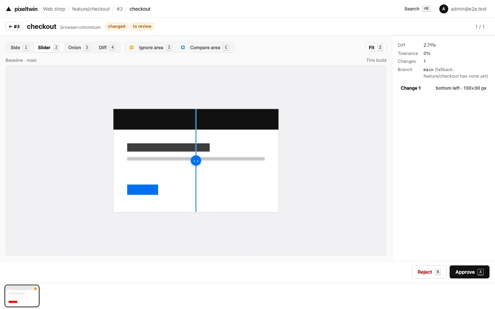
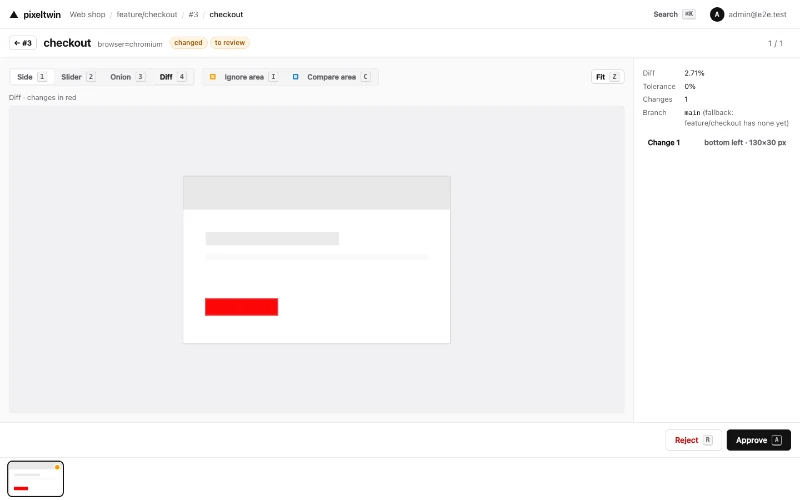
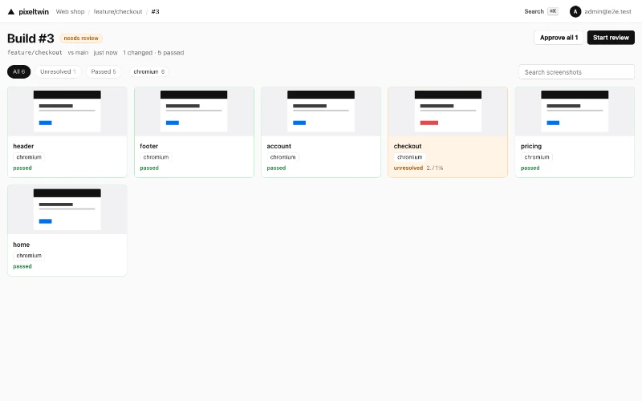
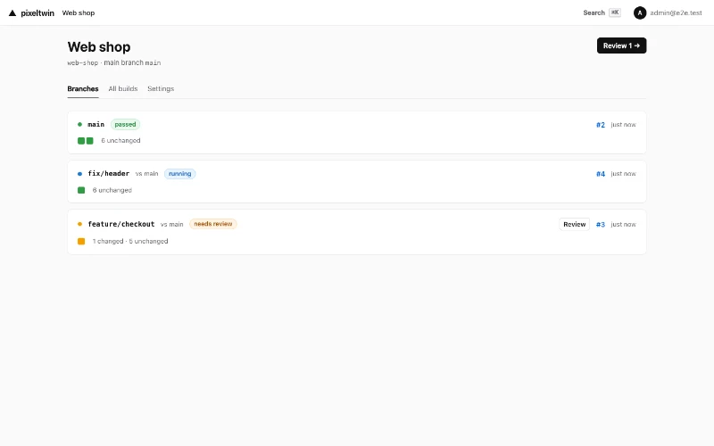

pixeltwin mcp
A stdio MCP server in @pixeltwin/client. The agent reads what changed element by element, looks at the images cropped to a change to save tokens, and judges a change group once.
Open source · Apache-2.0 · early development (0.x)
Your tests post screenshots. pixeltwin compares them with approved baselines, reviews the same change once, and turns the pull request green. One binary on your own servers, with an API built for CI and AI agents.

How it works
The Playwright or WebdriverIO SDK opens one build per test run (across shards too) and sends each screenshot with the page's visible elements. Any other tool can use the HTTP API.
Each screenshot is diffed against its approved baseline. The answer names what changed, element by element; screens with exactly the same change form one group, and screens that keep flipping are marked flaky.
Approve in the UI with the keyboard, or let an agent decide with a reason. The commit status on the pull request updates with every review, so it goes green without running CI again.
Review
Side, Slider, Onion and Diff views, zoom to a changed region, and the next check is one key away. Reject asks why, in a small popover you answer with a number key.

A new header on 40 screens is one card with Approve all and Reject all. Every changed region gets a fingerprint of its pixels, wherever it is on the screen, and checks with exactly the same changes form a group.
Screens that keep flipping back and forth, like a clock or an ad, are marked flaky from their last 20 checks and listed under Noisy screens. Ignore noisy area previews the part that keeps changing and ignores it.
The SDKs send the boxes of the visible elements with each screenshot: test ids, roles, a short text and a few styles, never what was typed into a field. When the baseline has them too, the diff says what moved, resized, changed text or style, appeared or disappeared.
The build page shows a page of cards that fits the window, with no scrolling on a desktop. [ and ] change the page, the arrows move between cards, and the thumbnails are small copies made on the server, so the page loads small images, not whole screenshots.

Pull requests
Connect a project to GitHub (including Enterprise Server) or GitLab (including self-hosted), and every build reports back to its pull or merge request.
pixeltwin/<project>: pending while screenshots wait, success when the build passes, posted again after every review.The SDK reads the commit, repository and pull request from GitHub Actions and GitLab CI by itself.

AI agents
pixeltwin speaks to agents as plainly as to people: the same API, a Model Context Protocol server, and rules you set for what an agent may decide.
{
"mcpServers": {
"pixeltwin": {
"command": "npx",
"args": [
"-y", "--package=@pixeltwin/client",
"pixeltwin", "mcp"
],
"env": {
"PIXELTWIN_URL": "http://localhost:8080",
"PIXELTWIN_TOKEN": "${PIXELTWIN_TOKEN}",
"PIXELTWIN_PROJECT": "web"
}
}
}
}pixeltwin mcpA stdio MCP server in @pixeltwin/client. The agent reads what changed element by element, looks at the images cropped to a change to save tokens, and judges a change group once.
/llms.txt and OpenAPIEvery server serves the workflow in plain text at /llms.txt and the full contract at /openapi.json, where each operation's x-permission says what it needs.
A token with the review scope approves or rejects with a reason, kept in the history with an agent badge. The project's policy decides what that does:
Every rejection says why: not_loaded, late_asset, animation, dynamic_data, environment, real_bug or other. Agents see a screen's recent rejections with a hint, such as waiting for network idle before the screenshot.
Teams and operations
Viewers look, reviewers approve and reject, maintainers manage settings, tokens and members. A user outside a project gets 404, as if it did not exist.
Invite people by email with a one-time link, or let them request access from the login page (optionally only for some email domains) until an admin approves.
Standalone binaries for Linux, macOS and Windows, and an image for amd64 and arm64. Start it, open the setup link, done. Data stays in a directory you choose.
SQLite with images on disk by default. With Postgres the screenshots can live in the database too, so the server keeps no state and one pg_dump is the whole backup.
With Postgres storage run as many replicas as you like with rolling updates. Migrations run once under a lock, and each webhook and mail goes out from one replica.
With METRICS=1, requests, checks by result, builds by verdict, diff queue depth and outbox backlogs, on a port of their own so a proxy never exposes them.
Quickstart
The log prints a setup link. Open it to create the first admin, then a project and a CI token with the read and write scopes.
Prefer Postgres, a binary or Kubernetes? See Run it.
docker run -d --name pixeltwin -p 8080:8080 -v pixeltwin-data:/data \
-e PUBLIC_URL=http://localhost:8080 ghcr.io/pixeltwin/pixeltwin:latest
docker logs pixeltwin # shows the setup linkOne pixeltwin build per test run and a summary with review links at the end. Until the packages are on npm, install them from a GitHub release (no token needed).
R=https://github.com/pixeltwin/pixeltwin/releases/download/v0.1.0
npm install -D $R/pixeltwin-client-0.1.0.tgz \
$R/pixeltwin-playwright-0.1.0.tgz// playwright.config.ts
export default defineConfig({
globalSetup: '@pixeltwin/playwright/setup',
// …your projects
});
// tests/home.spec.ts
import { test } from '@pixeltwin/playwright';
test('home', async ({ page, pixeltwin }) => {
await page.goto('/');
await pixeltwin.check(page, 'home', { ignore: [page.locator('.clock')] });
});PIXELTWIN_URL=http://localhost:8080 PIXELTWIN_TOKEN=pt_… \
PIXELTWIN_PROJECT=web PIXELTWIN_GATE=1 npx playwright testR=https://github.com/pixeltwin/pixeltwin/releases/download/v0.1.0
npm install -D $R/pixeltwin-client-0.1.0.tgz \
$R/pixeltwin-wdio-0.1.0.tgz// wdio.conf.ts
import { PixeltwinService } from '@pixeltwin/wdio';
export const config: WebdriverIO.Config = {
services: [[PixeltwinService, { project: 'web' }]],
// …
};
// test/home.e2e.ts
import '@pixeltwin/wdio'; // types for browser.pixeltwinCheck
it('home', async () => {
await browser.url('/');
await browser.pixeltwinCheck('home', { ignore: [$('.clock')] });
});PIXELTWIN_URL=http://localhost:8080 PIXELTWIN_TOKEN=pt_… \
PIXELTWIN_GATE=1 npx wdio run wdio.conf.tsAPI=http://localhost:8080/api/v1
AUTH="Authorization: Bearer $PIXELTWIN_TOKEN"
# 1. Open a build (the same externalId on a retry returns the same build)
curl -X POST $API/projects/web/builds -H "$AUTH" -H 'content-type: application/json' \
-d '{"branch":"feature/login","baseBranch":"main","externalId":"ci-run-123"}'
# 2. Post each screenshot: the answer arrives after the comparison
curl -X POST $API/builds/<buildId>/checks -H "$AUTH" -F image=@login.png \
-F 'meta={"name":"login","variant":{"browser":"chromium","viewport":"1280x720"}}'
# 3. Finalize, then act on the verdict: only "passed" is success
curl -X POST $API/builds/<buildId>/finalize -H "$AUTH"The whole workflow for CI and agents is at /llms.txt on your server; the reference is at /docs.
With PIXELTWIN_GATE=1 the run fails unless the verdict is passed. By default a changed screenshot does not fail its own test: the verdict decides once, at the end.
PIXELTWIN_URLhttp://localhost:8080PIXELTWIN_TOKENread and writePIXELTWIN_PROJECTPIXELTWIN_GATE1 fails the run unless it passedpixeltwin is open source under the Apache-2.0 licence. Run it next to your CI and keep every image in a directory or database you control.